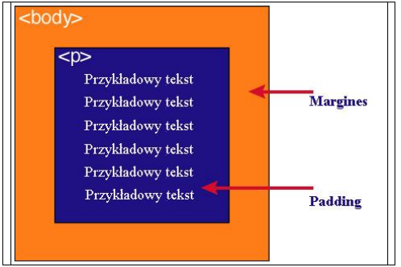

Każdy element w dokumencie HTML, otacza się prostokątnym obszarem zwanym pudełkiem
(ang. Box model). Pudełko składa się z kilku warstw.
Wykonaj oraz uzupełnij tabelę:
Zawartość
Opis
content
zawartość elementu
padding
marginesy wewnętrzne otaczające element
border
obramowanie elementu
margin
marginesy wokół zawartości elementu
Podaj dwie uwagi na temat modelu pudełkowego.
Padding, border i margin mogą mieć zerową wartość.
Tło elementu jest określone dla wszystkich z podanych powyżej obszarów z wyjątkiem
marginesów zewnętrznych, które zawsze są przezroczyste (transparent).
Wstaw grafikę obrazującą model pudełkowy.
Wstaw grafikę obrazującą różnicę pomiędzy paddingiem i marginesem wraz z opisem

Jak widać na rysunku, padding oznaczony jest kolorem niebieskim. Określa on wielkość
przestrzeni wokół elementu. Element ten posiada również margines zaznaczony kolorem
pomarańczowym. Jest to odległość od brzegu elementu